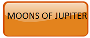
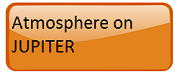
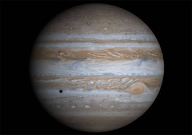
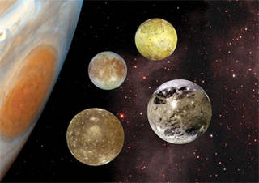

Jupiter is the largest planet in the solar system. It is approximately 143,000 kilometers (about 89,000 miles) wide at its equator. Jupiter is so large that all of the other planets in the solar system could fit inside it. More than 1,300 Earths would fit inside Jupiter.
Jupiter is like a star in composition. If Jupiter had been about 80 times more massive, it would have become a star rather than a planet.
Jupiter is the fifth planet from the sun. Jupiter's average distance from the sun is 5.2 astronomical units, or AU. This distance is a little more than five times the distance from Earth to the sun. When viewed from Earth, Jupiter is usually the second brightest planet in the night sky, after Venus. The planet is named after Jupiter, the king of the Roman gods in mythology.
What Is Jupiter Like?
Jupiter is called a gas giant planet. Its atmosphere is made up of mostly hydrogen gas and helium gas, like the sun. The planet is covered in thick red, brown, yellow and white clouds. The clouds make the planet look like it has stripes.
One of Jupiter’s most famous features is the Great Red Spot. It is a giant spinning storm, resembling a hurricane. At its widest point, the storm is about 3 1/2 times the diameter of Earth. Jupiter is very windy. Winds range from 192 mph to more than 400 mph.
Jupiter has three thin rings that are difficult to see. NASA’s Voyager 1 spacecraft discovered the rings in 1979. Jupiter’s rings are made up mostly of tiny dust particles.
Jupiter rotates, or spins, faster than any other planet. One rotation equals one day. Jupiter's day is only about 10 hours long. Jupiter’s orbit around the sun is elliptical, or oval-shaped. Jupiter takes 12 Earth years to make one revolution around the sun, so one year on Jupiter is equal to 12 years on Earth.

The temperature in the clouds of Jupiter is about minus 145 degrees Celsius (minus 234 degrees Fahrenheit). The temperature near the planet's center is much, much hotter. The core temperature may be about 24,000 degrees Celsius (43,000 degrees Fahrenheit). That’s hotter than the surface of the sun!
If a person could stand on the clouds at the top of Jupiter’s atmosphere, the force of gravity he or she would feel would be about 2.4 times the force of gravity on the surface of Earth. A person who weighs 100 pounds on Earth would weigh about 240 pounds on Jupiter.
Jupiter has an extremely powerful magnetic field, like a giant magnet. Deep under Jupiter’s clouds is a huge ocean of liquid metallic hydrogen. On Earth, hydrogen is usually gas. But on Jupiter, the pressure is so great inside its atmosphere that the gas becomes liquid. As Jupiter spins, the swirling, liquid metal ocean creates the strongest magnetic field in the solar system. At the tops of the clouds (tens of thousands of kilometers above where the field is created), Jupiter’s magnetic field is 20 times stronger than the magnetic field on Earth.
How Many Moons Does Jupiter Have?
Jupiter has 53 named moons. Scientists have discovered 14 more. But those 14 moons do not have official names. Scientists now think Jupiter has a total of 67 moons. The most recent moons were discovered in 2011. The planet’s four largest moons are Ganymede (GAN-i-meed), Callisto (kuh-LIS-toe), Io (eye-OH), and Europa (yur-O-puh).
These four moons are called the Galilean satellites. Italian astronomer Galileo Galilei discovered these moons in 1610.
The largest of Jupiter’s moons is Ganymede. It is the largest moon in the solar system. Ganymede is larger than the planet Mercury and three-fourths the size of Mars. Ganymede is the only moon in the solar system known to have its own magnetic field. Ganymede and Callisto have many craters and appear to be made of ice and rocky material.
Io has many active volcanoes. The volcanoes produce gases containing sulfur. The yellow-orange surface of Io is most likely made of sulfur from the volcanic eruptions. Europa is the smallest of the Galilean satellites. Europa's surface is mostly water ice. Beneath the ice may be an ocean of water or slushy ice. Europa is thought to have twice as much water as Earth.
How Has NASA Studied Jupiter?
NASA astronomers have used telescopes on Earth to study Jupiter. Astronomers also have used telescopes like the Hubble Space Telescope that orbit Earth. From 1979 to 2007, eight NASA spacecraft studied Jupiter: Pioneer 10, Pioneer-Saturn, Voyager 1, Voyager 2, Ulysses, Galileo, Cassini and New Horizons. (The Ulysses, Cassini and New Horizons missions flew by Jupiter on their way to planets and locations farther in the solar system.) These missions studied Jupiter’s atmosphere, moons and rings. The missions also took close-up images of the planet’s unique features. The first mission to Jupiter was Pioneer 10, launched in 1972.
For more information, Contact Us
 JUPITER
JUPITER